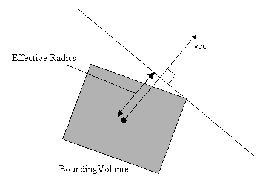

com.nttdocomo.ui.graphics3d.collision.AbstractShape
com.nttdocomo.ui.graphics3d.collision.AbstractBV
com.nttdocomo.ui.graphics3d.collision.Cylinder
com.nttdocomo.ui.graphics3d.collision.AbstractShape
com.nttdocomo.ui.graphics3d.collision.AbstractBV
com.nttdocomo.ui.graphics3d.collision.Cylinder
|
||||||||||
| 前のクラス 次のクラス | フレームあり フレームなし | |||||||||
| 概要: 入れ子 | フィールド | コンストラクタ | メソッド | 詳細: フィールド | コンストラクタ | メソッド | |||||||||
Object
方向を持つCylinderを表わすクラスです。
BoundingVolumeインターフェースの説明を参照してください。
このクラスは、OBV(Oriented Bounding Volume)の１つです。
Cylinder形状のAABV(Axis-Aligned Bounding Volume)クラスは、AABCylinderクラスです。
| フィールドの概要 |
| インタフェース com.nttdocomo.ui.graphics3d.collision.BoundingVolume から継承したフィールド |
ROTATE_NONE, ROTATE_X, ROTATE_XY, ROTATE_Y, ROTATE_YX, ROTATE_Z |
| インタフェース com.nttdocomo.ui.graphics3d.collision.Shape から継承したフィールド |
TRANS_BV_SHAPE, TRANS_BV_WORLD, TRANS_BV_WORLD_NOSCALE, TRANS_SHAPE_WORLD, TRANS_SHAPE_WORLD_NOSCALE, TYPE_AAB_BOX, TYPE_AAB_CAPSULE, TYPE_AAB_CYLINDER, TYPE_BOX, TYPE_CAPSULE, TYPE_CYLINDER, TYPE_LINE, TYPE_PLANE, TYPE_POINT, TYPE_RAY, TYPE_SPHERE, TYPE_TRIANGLE |
| コンストラクタの概要 | |
Cylinder(float radius,
float height)
半径と高さを指定してCylinderオブジェクトを生成します。 |
|
| メソッドの概要 | |
void |
createMesh(int rgb,
int mode,
float v)
テスト描画用の Primitiveオブジェクトを生成します。 |
float |
getEffectiveRadius(Vector3D vec)
指定した方向の実効半径(Effective Radius)を取得します。 |
float |
getHeight()
Cylinderオブジェクトの高さを取得します。 |
float |
getRadius()
Cylinderオブジェクトの半径を取得します。 |
void |
set(float radius,
float height)
半径と高さを指定してCylinderオブジェクトを設定します。 |
| クラス com.nttdocomo.ui.graphics3d.collision.AbstractBV から継承したメソッド |
getCenter, getRotate, isHittingFromBackFaceEnabled, setCenter, setHittingFromBackFaceEnabled, setRotate |
| クラス com.nttdocomo.ui.graphics3d.collision.AbstractShape から継承したメソッド |
deleteMesh, getAttribute, getMesh, getMeshTransform, getScale, getShapeType, getTransform, setAttribute, setTransform |
| クラス Object から継承したメソッド |
equals, getClass, hashCode, notify, notifyAll, toString, wait, wait, wait |
| インタフェース com.nttdocomo.ui.graphics3d.collision.Shape から継承したメソッド |
deleteMesh, getAttribute, getMesh, getMeshTransform, getScale, getShapeType, getTransform, setAttribute, setTransform |
| コンストラクタの詳細 |
public Cylinder(float radius,
float height)
半径と高さを指定してCylinderオブジェクトを生成します。
radius - 半径を指定します。height - 高さを指定します。
IllegalArgumentException - 引数radius、heightのうち、１つでも0以下の値がある場合に発生します。
| メソッドの詳細 |
public void set(float radius,
float height)
半径と高さを指定してCylinderオブジェクトを設定します。
radius - 半径を指定します。height - 高さを指定します。
IllegalArgumentException - 引数radius、heightのうち、１つでも0以下の値がある場合に発生します。
public float getRadius()
Cylinderオブジェクトの半径を取得します。
public float getHeight()
Cylinderオブジェクトの高さを取得します。
public void createMesh(int rgb,
int mode,
float v)
Shape の記述:
テスト描画用のPrimitiveオブジェクトを生成します。
開発時の図形位置の確認用としての利用を前提としたメソッドです。
描画の方法は、getMeshメソッドでPrimitiveオブジェクトを取得し、getMeshTransformメソッドで
一次変換行列を取得して、これらをGraphics3DのrenderObject3Dメソッドの引数に渡して描画します。
生成したPrimitiveオブジェクトは、形状クラスで保持されます。
setメソッドで形状を変更した場合は、createMeshメソッドでPrimitiveオブジェクトを
再生成してください。それ以外の場合は再生成する必要はありませんが、描画ごとに
getMeshメソッドでPrimitiveオブジェクトを取得して使用するようにしてください。
(AABVでは、ワールド座標軸に平行になるようにPrimitiveオブジェクトの頂点データが変更
されます)
不要になった場合はdeleteMeshメソッドで削除してください。
色、ブレンドモード、透明度の設定に関する制限に関しては、Primitiveクラスを参照してください。
ブレンドモードにDrawableObject3D.BLEND_ALPHA、透明度に50%のような値を使用すると、
図形位置の確認がしやすくなります。
※ 図形サイズ・位置に関する注意事項
生成される頂点座標は、本パッケージの内部処理で使用しているfloat型から、Primitiveの
頂点座標で使われているshort型の範囲(-32768以上かつ32767 以下)にマッピングされるため、
範囲に収まらないサイズ・位置の場合、正常に描画されないことがあります。
また、Ray、Planeは、描画上は有限の大きさとなり、端が存在します。
rgb - 0x00rrggbbの形式で、Primitiveオブジェクトの色を指定します。上位8ビットは無視されます。mode - ブレンドモードを指定します。DrawableObject3D.BLEND_NORMAL、DrawableObject3D.BLEND_ALPHA、DrawableObject3D.BLEND_ADDのいずれかを指定します。v - 透明度をパーセントで指定します。100の時が不透明です。
IllegalArgumentException - 引数modeがDrawableObject3D.BLEND_NORMAL, DrawableObject3D.BLEND_ALPHA, DrawableObject3D.BLEND_ADDのいずれかでもない場合に発生します。
IllegalArgumentException - 引数vがFloatNaNの場合、0未満の場合、あるいは100より大きい場合に発生します。
public float getEffectiveRadius(Vector3D vec)
BoundingVolume の記述: 指定した方向の実効半径(Effective Radius)を取得します。
実効半径：
引数vecを法線ベクトルに持つ平面が、BoundingVolumeの中心からvecの方向にあり、
BoundingVolumeに接する状態にあるとき、BoundingVolumeの中心と平面の距離が実効半径となります。

vec - 実効半径を求める方向のベクトルを指定します。
NullPointerException - 引数vecがnullの場合に発生します。
IllegalArgumentException - 引数vecが零ベクトルの場合に発生します。
|
||||||||||